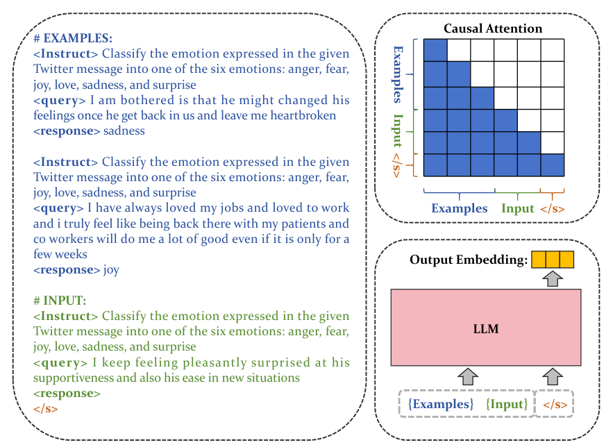

BGE-EN-ICL：让 Embedding 也会 In-Context Learning¶
paper：Making Text Embedders Few-Shot Learners (ICLR 2025) code / model：FlagOpen/FlagEmbedding · BAAI/bge-en-icl refs：E5-Mistral (Wang 2023) · NV-Embed (Lee 2024) · GritLM (Muennighoff 2024) · LLM2Vec (BehnamGhader 2024) · INSTRUCTOR (Su 2022) · Task-aware Instructions (Su 2024) · FollowIR (Weller 2024) · Repllama (Ma 2023) backbone：Mistral-7B（保留 causal attention + last-token EOS pooling，无双向改造） date：2024-09 arXiv；ICLR 2025 modality：文本 languages：英文
本文写全 BGE-EN-ICL 的核心主张——保留 LLM 的因果注意力与 last-token pooling，只在 query 前面拼「任务示例（few-shot）」就能让 embedding 空间学会 ICL。同时把「保留原始架构比改造更好」这一反直觉结论、动态示例采样训练策略、In-Batch Example Selection、以及一系列与 NV-Embed / GritLM / LLM2Vec 的架构消融对比讲透。这篇 paper 也是 bge-multilingual-gemma2 与 BGE-Reranker v2.5 的姊妹发布。
一句话定位¶
BGE-EN-ICL = Mistral-7B + 保留 causal attention + [EOS] 池化 + 在 query 前拼 0~5 个 few-shot 示例 + 动态采样训练。
它是所有 LLM-Embedding 里最"反潮流"的一个：
- 不改注意力：不像 NV-Embed / GritLM / LLM2Vec 那样把 causal mask 去掉。
- 不改池化：不用 Latent Attention 或 mean pool，就用最简单的 [EOS] token。
- 不改 backbone：直接 Mistral-7B + LoRA rank 64 微调。
- 只加一件事：训练时把「若干个同任务示例」拼在 query 前面，让模型学会基于示例调整 query 表示——把 LLM 天生的 ICL 能力延伸到嵌入空间。
结果：MTEB 71.24（zero-shot）/ 71.67（few-shot），2024-09 榜首之一；且架构最简单，代码最短。
| 项 | 值 |
|---|---|
| Backbone | Mistral-7B（causal） |
| Pooling | 最后一层的 [EOS] token 隐状态 |
| Attention | 保留因果 mask，无双向改造 |
| LoRA rank / α | 64 / 32 |
| Batch (Retrieval) | 512（配 7 hard neg + in-batch neg） |
| Batch (其它任务) | 256（配 7 hard neg，无 in-batch） |
| 温度 \(\tau\) | 0.02 |
| Max seq (q + examples) | 2048 tokens |
| 示例数（训练） | 0–5 动态采样 |
| 示例来源（训练） | In-batch Example Selection |
| 蒸馏教师 | bge-reranker-v2.5-gemma2-lightweight（同期发布） |
| MTEB Avg (public) | 71.24（zero-shot）/ 71.67（few-shot） |
谱系与位置¶
INSTRUCTOR (2022, 单指令化) ── E5-Mistral (2023, 单指令 + LLM 骨干)
│
├─ NV-Embed / GritLM / LLM2Vec：改架构（bi-attn / latent pool）
│
└─ **BGE-EN-ICL (2024)**：不改架构，加 ICL few-shot 示例
│
├─→ bge-multilingual-gemma2（同期姊妹发布，多语版）
└─→ bge-reranker-v2.5-gemma2-lightweight（同期精排 + 蒸馏教师）
反潮流的方法学意义：BGE-EN-ICL 相当于告诉整个 2024 年冲榜路线：「你们改的注意力和池化其实不必要，把 LLM 的 ICL 能力用起来就够了」。它与 NV-Embed 的最大差异不是分数（差 1 分），而是代码复杂度 vs 使用复杂度的取舍——BGE-EN-ICL 训练代码短，但用户线上要准备示例池；NV-Embed 训练复杂但用户拿来就能用。
问题背景：指令化嵌入的天花板¶
INSTRUCTOR / E5-Mistral 时代确立了「query 侧加指令」的范式，让一个 embedder 同时服务多种任务：
但两组工作都观察到相同的局限（FollowIR (Weller 2024) 与 Task-aware Instructions (Su 2024)）：
- 指令泛化能力有限：训练时见过的指令模板才管用，换个措辞或换个域效果就掉。
- 复杂检索任务失灵：需要多步推理、需要用户明确说明「负例长啥样」的检索任务，单靠自然语言指令不够。
作者的观察：LLM 有 ICL 能力，但 embedder 版没有。GPT-3 / Mistral 遇到没见过的任务，只需要在 prompt 里塞几个示例就能做——为什么 embedder 不行？
答案是：embedder 训练时只见过「一句话指令」，没见过「一句话指令 + N 个示例」。想让 embedder 会 ICL，就得在训练时给它见到 ICL 格式，让它学会从示例中提取任务信号并对当前 query 做出调整。
方法：ICL 化的 query 与训练目标¶
模板¶
对同任务的一批 (query, passage) 对 \(\{(q_i, p_i)\}\)，先造一个示例模板：
再把 \(n\) 个示例拼到当前 query \(q^+\) 前面：
关键点：
- 示例结尾是
response: {p_k}（正例文档整段），不是 label token； - 当前 query 结尾是
response:（空白），触发模型预测这个位置的表征； - passage 侧不加任何前缀——只 query 侧扩展。
架构图¶

上图（论文 Figure 1）清楚显示：因果注意力（黄色斜下三角）加最后一个 [EOS] token 的隐状态当作 embedding。示例段是「参考区」，当前 query 是「预测区」；模型在 causal 前向中自动学会「参考示例的语义模式」来决定 [EOS] 的输出。
损失¶
用标准温度 InfoNCE：
- \(s(q, p) = \cos(h_q, h_p)\)，\(\tau = 0.02\)。
- \(\mathcal{N}\)：7 个 hard neg + Retrieval 任务的 in-batch neg；分类/聚类/STS 任务不用 in-batch（同类样本可能是假负，与 NV-Embed 的 Stage 2 关 in-batch 结论一致）。
蒸馏¶
BGE-EN-ICL 同时使用 bge-reranker-v2.5-gemma2-lightweight 作教师（同期发布），对 Retrieval 任务做排序蒸馏（Margin MSE + KL）。这个精排在 BGE-Reranker 详解 里有独立描述。
关键设计：动态示例采样 + In-Batch Example Selection¶
BGE-EN-ICL 最工程化的两个设计。
动态示例数（0 → 5）¶
如果训练时永远给示例，模型会形成对示例的依赖，零样本推理时（不给示例）分数崩。作者用每个训练 step 从 0~5 均匀采样的示例数：
- 50% 的时间 → 0 示例（zero-shot 训练）
- 剩下 → 1、2、3、4、5 示例均等
结果：同一个 checkpoint 既支持 zero-shot 又支持 few-shot，不用两套模型。这与后来 GritLM 的「gen 和 rep 分开 batch」是同一哲学——让训练分布覆盖推理分布。
In-Batch Example Selection¶
关键问题：训练时示例哪来？两种选择：
- 静态示例池：预先给每个任务准备一批示例。缺点是任务内示例雷同，模型学不到「区分示例与 query」的能力。
- In-batch 采样：当前 batch 里其它样本的 (q, p) 对当示例。同一 batch 内的样本天然共任务，且每步都有不同的 combination，多样性极高。
作者选了后者，且额外强调这训练出了一种「辨识能力」——模型学会「示例只是任务提示，别照抄示例的 query 和 passage」。这个细节在使用侧非常重要：线上如果给的示例过于相似于当前 query，模型会把示例本身当成候选正例，这是常见误用。
消融：为什么"保留原架构"最好¶
BGE-EN-ICL 与 NV-Embed / GritLM / LLM2Vec 的最大分歧——改不改注意力和池化。作者做了系统性消融，结论出乎意料。
RQ 4：Causal vs Bidirectional¶
| 配置 | MTEB Avg | Δ vs causal |
|---|---|---|
| Causal (BGE-EN-ICL) | 71.24 | — |
| Bidirectional (all layers) | 70.61 | −0.63 |
| Bidirectional (last layer only) | 70.98 | −0.26 |
在 ICL 训练配方下，改双向注意力反而掉分。作者的解释：ICL 能力本质是**「基于前文预测下一个 token 的模式」**——这是 causal 训练的产物；改成双向后，模型的 ICL 能力被削弱，示例段与 query 段的信息流被破坏。
注意：这与 NV-Embed 报的「改双向 +2」结论看似矛盾，但根本原因是训练配方不同：
- NV-Embed 用「Bi-attn + Latent Pool + 两阶段合训」；这一套 recipe 中改双向是正收益。
- BGE-EN-ICL 用「Causal + [EOS] Pool + ICL 训练」；这一套 recipe 中改双向是负收益。
结论不是「哪种更好」，而是「注意力方式必须与训练配方匹配」。
RQ 5：Pooling 方式¶
| 池化方式 | MTEB Avg |
|---|---|
| [EOS] token pooling | 71.24 |
| Mean pooling | 70.15 |
| Weighted mean pooling | 70.35 |
| Latent attention (NV-Embed 式) | 70.72 |
在 ICL 配方下，[EOS] pooling 反而是最优。作者的直觉：causal attention 让 [EOS] 位天然是「看完整个前文（示例 + 当前 query）」的位置——正是 ICL 想要的融合点。加更复杂的池化模块反而稀释了 [EOS] 的信息。
RQ 6：给 passage 也加 prompt？¶
| Passage 前缀 | MTEB Avg |
|---|---|
| 无 prompt | 71.24 |
Represent this passage: |
70.86 |
Represent this passage for search: |
70.72 |
给 doc 侧加 prompt 反而掉分。与 E5-Mistral / INSTRUCTOR 的「非对称指令」结论一致：doc 索引不变、任务切换只改 query 侧。
三个消融共同结论¶
「保留 LLM 的原始架构 + 只在训练数据侧加 ICL 结构」是这条路线的最优解。工程价值：
- 训练代码几乎等于 E5-Mistral（LoRA + InfoNCE），只是加一个 dataset transformer。
- 推理时同一模型支持 zero-shot / few-shot 两种模式。
- 换 backbone 极简单（换成 Gemma2 就是同期的 bge-multilingual-gemma2）。
Few-shot 效果：例子数 vs 分数¶
论文 §4.4 主表拆开 zero-shot 与 few-shot：
| 模型 | 0 示例 (MTEB) | +示例后 (MTEB) |
|---|---|---|
| E5-Mistral-7B | 66.63 | 66.63（无 ICL 能力，加示例反而掉分） |
| SFR-Embedding-Mistral | 67.56 | 67.72 |
| NV-Embed-v1 | 69.32 | 68.79（-0.53，也是不擅长 ICL） |
| BGE-EN-ICL (Mistral-7B) | 71.24 | 71.67（+0.43） |
关键观察：
- 无 ICL 训练的模型（E5-Mistral / SFR / NV-Embed）加示例大概率掉分——没见过这种 prompt 格式。
- BGE-EN-ICL 加示例平均涨 +0.43，且在 OOD 任务上涨得更多（部分数据集 +2 以上）。
- 示例数 3–5 是甜点；超过 5 收益递减、且 max_seq 压力大。
复杂任务上 ICL 的最大收益¶
论文举例：FollowIR 里那种"用户在 prompt 里说明哪些不想要"的复杂查询，加 2–3 个示例后 nDCG@10 相对 zero-shot 涨 8+ 点。这类任务传统 embedder（甚至 NV-Embed）几乎做不了，因为没在训练中见过这种 prompt 结构。
训练数据¶
BGE-EN-ICL 用两版数据训了两个 checkpoint：
Public 版（与 E5-Mistral / LLM2Vec 相同数据源，公平对比用）：
- ELI5、HotpotQA、FEVER、MIRACL、MSMARCO、NQ、NLI、SQuAD、TriviaQA、Quora、MrTyDi、DuReader、T2Ranking
Full 版（额外补的多任务数据，最终 checkpoint）：
- Retrieval：+ Arguana、FiQA
- Reranking：SciDocsRR、StackOverFlowDupQuestions
- Classification：8 个（AmazonReviews / Banking77 / Emotion / TweetSentimentExtraction / MTOP / IMDB / Toxic）
- Clustering：Arxiv/Biorxiv/Medrxiv/Reddit/StackExchange × S2S/P2P + TwentyNewsgroups
- STS：STS12 / STS22 / STS-B
数据量级：Full 版约 300 万+ 训练对（大部分来自 Retrieval）。
训练配置¶
| 项 | 值 |
|---|---|
| 骨干 | Mistral-7B |
| 训练方式 | LoRA rank=64、α=32、learning rate 1e-4 |
| 优化器 | AdamW |
| 温度 | \(\tau = 0.02\) |
| Batch (Retrieval) | 512，7 hard neg + in-batch neg |
| Batch (其它任务) | 256，7 hard neg，无 in-batch |
| Epochs | 1（数据量大，1 epoch 足够） |
| Max seq (q) | 512 单条；含示例合起来 2048 |
| Max seq (p) | 512 |
| Max seq (示例) | 256（q）+ 256（p）× N |
| 示例采样数 | 0–5 均匀采样 |
| 示例来源 | In-batch Example Selection |
| 蒸馏教师 | bge-reranker-v2.5-gemma2-lightweight（Margin MSE + KL） |
| 硬件 | 未在正文明确；社区推测 32–64× A100 |
主要结果¶
MTEB（public 数据集，2024-09）¶
| 模型 | 数据规模 | MTEB Avg | Retrieval (BEIR) |
|---|---|---|---|
| E5-Mistral-7B | public | 66.63 | 56.90 |
| SFR-Embedding-Mistral | public+ | 67.56 | 59.00 |
| NV-Embed-v1 | full | 69.32 | 59.36 |
| gte-Qwen2-7B-instruct | ？ | 70.24 | 60.25 |
| BGE-EN-ICL (public, zero-shot) | public | 69.87 | 58.31 |
| BGE-EN-ICL (public, few-shot) | public | 70.15 | 58.68 |
| BGE-EN-ICL (full, zero-shot) | full | 71.24 | 61.67 |
| BGE-EN-ICL (full, few-shot) | full | 71.67 | 62.15 |
在同数据规模下（public），BGE-EN-ICL zero-shot 已超越 E5-Mistral（+3.24）与 SFR（+2.31）；加示例继续 +0.28。
AIR-Bench（LLM 自动生成的检索评测）¶
MTEB 的一个已知问题是训练分布可能覆盖评测。作者补做 AIR-Bench：LLM 生成的域外检索测试集，防止训练污染。
- BGE-EN-ICL few-shot 在 AIR-Bench 上领先 NV-Embed-v1 约 1.5 nDCG@10；
- 在 OOD 域上（Long Doc / QA / Reranking）优势更明显。
常见错误用法¶
- 训练用 ICL 但推理不给示例：BGE-EN-ICL 的动态采样保证了 zero-shot 也能跑，但它的最优场景是加示例。若线上完全不加示例，分数与 E5-Mistral 同档；投这么多训练成本可惜。
- 示例选得太像当前 query：In-batch Example Selection 时训练已经见过「多样示例」；线上如果只给和 query 极相似的示例（比如同一 FAQ 的重复），模型可能把示例本身当作候选正例。示例应挑「同任务但内容不同」。
- 示例数超过 5 或总长超 2048：训练时上限就是 2048 token / 5 示例。超上限会截断，模型在没见过的长度上表现下降。
- 给 passage 侧加 prompt：论文明确「加 passage prompt 掉 0.4」。保持 passage 无前缀，只 query 加。
- 拿 BGE-EN-ICL 权重去做双向 fine-tune：模型是按 causal 训的；直接改双向 fine-tune 会破坏 [EOS] 的表征位置。要换双向请从头训（或用 LLM2Vec 的三步走）。
- 误用蒸馏教师：BGE-EN-ICL 的蒸馏教师是 bge-reranker-v2.5-gemma2-lightweight（9B）。想蒸馏更小的 embedder（3B / 1.5B）时，教师用 bge-en-icl 本身更稳，用 reranker 教师容易「排序 KL」和「向量对齐」目标打架。
与 NV-Embed / GritLM / SFR 的选择对比¶
| 场景 | 推荐 |
|---|---|
| 榜单绝对分数最高、可接受复杂微调 | NV-Embed-v2 (72.31) |
| 生成 + 表征一体（RAG 一模型） | GritLM-7B |
| 从 E5-Mistral 继续小成本迭代 | SFR-Embedding-2R |
| 域外/复杂任务、需要 few-shot 指令灵活性 | BGE-EN-ICL |
| 最小骨干（<1B），部署便宜 | Arctic-Embed v2 / Stella |
| 多语通用 | bge-multilingual-gemma2 / mE5-Mistral |
BGE-EN-ICL 的独占价值：Zero-shot 到未见任务上仍有分——因为它训练时见过大量任务模板，且用户可以在线上「即插即用」注入领域示例。这个价值在 LLM-Embedding 冲榜路线里没有替代者。
与本仓库既有报告的挂接¶
- 前置：BGE-CPack 详解（BGE 全家桶起点）· INSTRUCTOR 详解（指令化嵌入开山）· E5 详解
- 同期姊妹：bge-multilingual-gemma2 详解（同一批发布，Gemma2 骨干）· BGE-Reranker 详解（同期蒸馏教师）
- 对照：LLM-Embedding 冲榜路线（NV-Embed / GritLM / SFR 的架构对比）
- 训练损失：对比学习与 InfoNCE 精讲
- 后续：Batch 3-4 [BGE-Reranker 详解]、Batch 4 [Qwen3-Embedding 详解]
- 主文：Embedding 调研报告 “指令编码与查询文档非对称”与 “机制族 C：Decoder LLM 作 Bi-Encoder”
本报告基于 BGE-EN-ICL 论文（arXiv 2409.15700）与 BAAI/bge-en-icl HF card 整理。图片取自论文 PDF。分数为 2024-09 MTEB 榜单；bge-en-icl 已开源全部代码、数据与蒸馏教师配套，属于当时"最可复现的 SOTA embedder"。